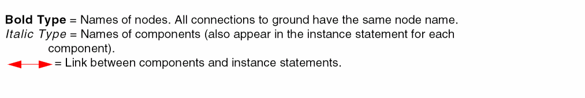
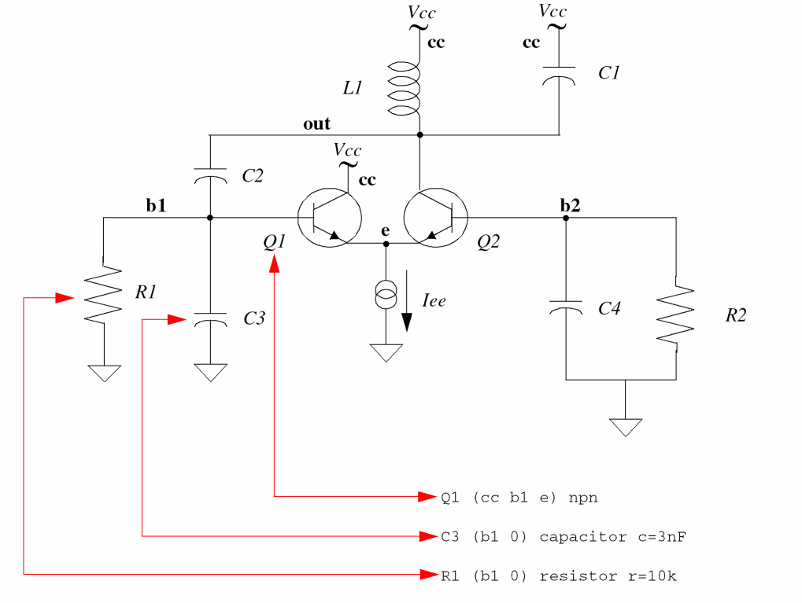
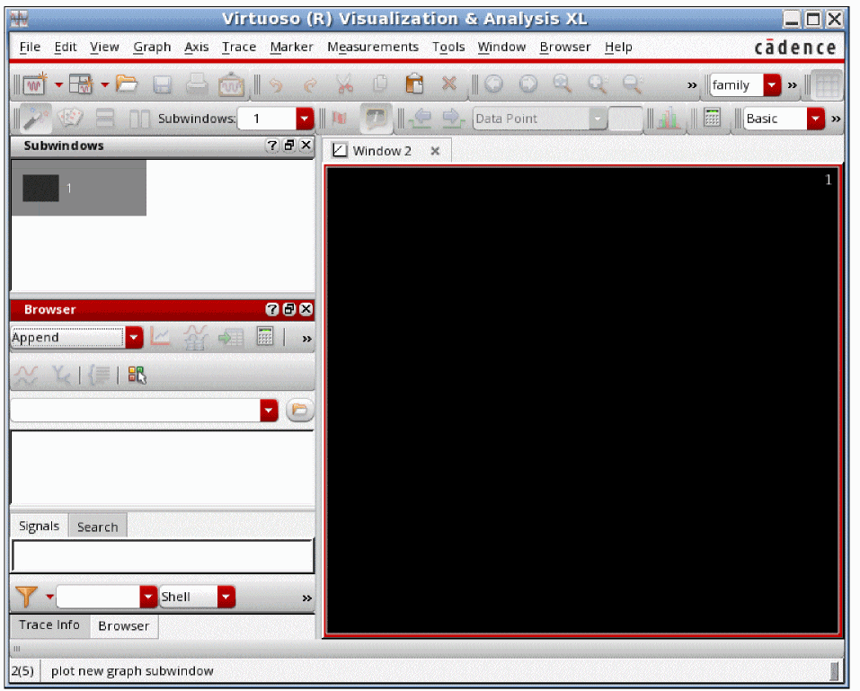
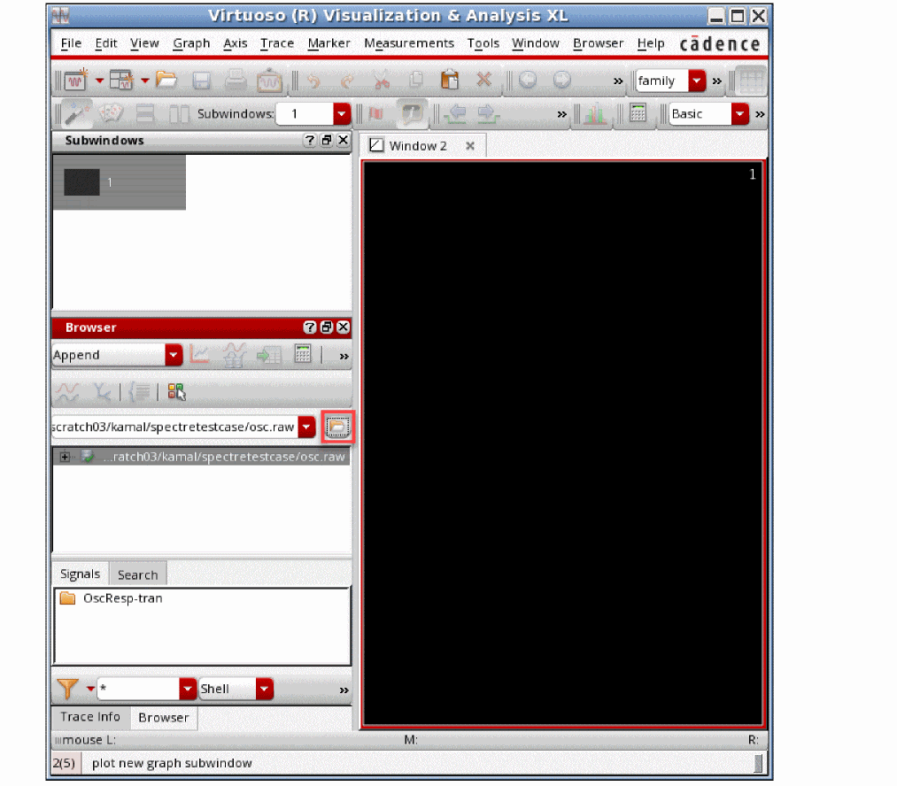
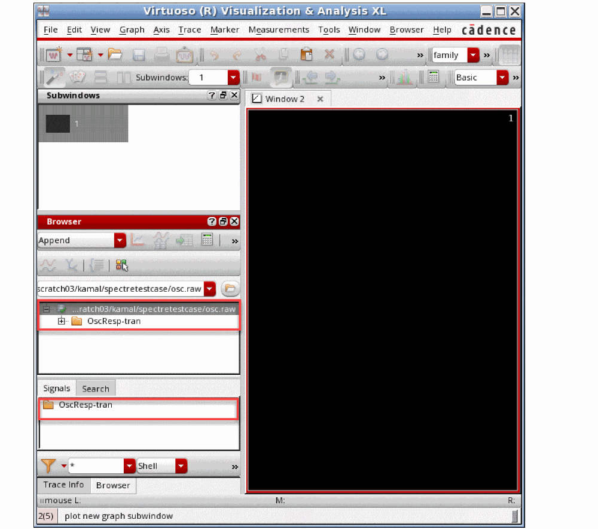
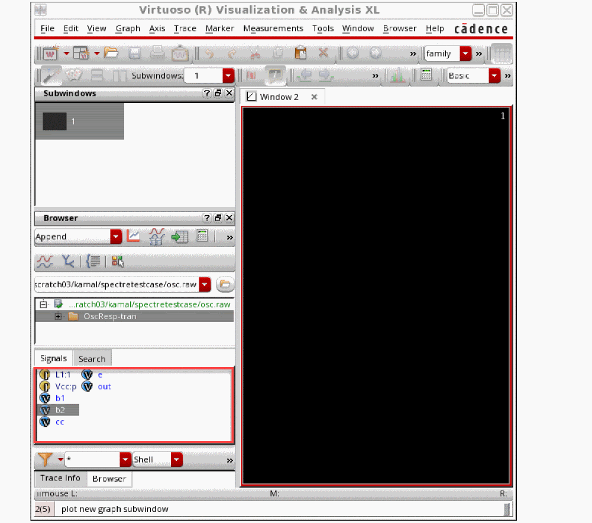
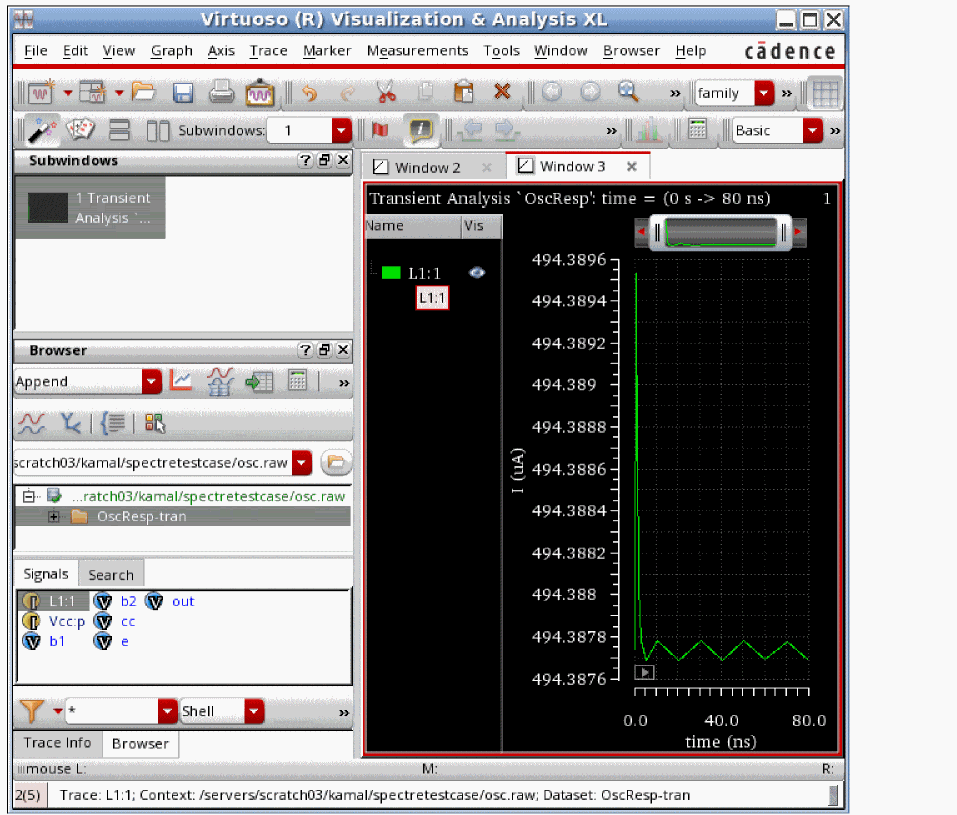
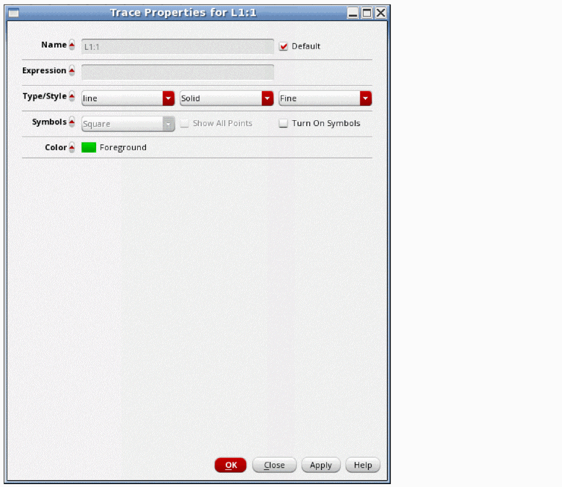

2
Getting Started with the Spectre Circuit Simulator
This chapter discusses the following topics:
- Using the Example and Displaying Results
- Sample Schematic
- Sample Netlist
- Instructions for a Spectre Simulation Run
- Viewing Your Output
Using the Example and Displaying Results
In this chapter, you examine a schematic and its Spectre® circuit simulator netlist to get an overview of Spectre syntax. You also follow a sample circuit simulation. The best way to use this chapter depends on your past experience with simulators.
Carefully examine the schematic (see Sample Schematic) and netlist (see Sample Netlist) and compare Spectre netlist syntax with that of SPICE-like simulators you have used. If you have prepared netlists for SPICE-like simulators before, you can skim Elements of a Spectre Netlist. With this method, you can learn a fair amount about the Spectre simulator in a short time.
Approach this chapter as an overview. You will probably have unanswered questions about some topics when you finish the chapter. Each topic is covered in greater depth in subsequent chapters. Do not worry about learning all the details now.
To give you a complete overview of a Spectre simulation, the example in this chapter includes the display of simulation results with Virtuoso Visualization and Analysis XL, a waveform display tool that is included with the Spectre simulator. If you use another display tool, the procedures you follow to display results are different. This user guide does not teach you how to display waveforms with different tools. If you need more information about how to display Spectre results, consult the documentation for your display tool.
The example used in this chapter is a small circuit, an oscillator; you run a transient analysis on the oscillator and then view the results. The following sections contain the schematic and netlist for the oscillator. If you have used SPICE-like simulators before, looking at the schematic and netlist can help you compare Spectre syntax with those of other simulators. If you are new to simulation, looking at the schematic and netlist can prepare you to understand the later chapters of this book.
You can also get more information about command options, components, analyses, controls, and other selected topics by using the spectre -h command to access the Spectre online help.
Sample Schematic
A schematic is a drawing of an electronic circuit, showing the components graphically and how they are connected together. The following schematic has several annotations:
-
Names of components
Each component is labeled with the name that appears in the instance statement for that component. The names for components are in italics (for example, Q2). -
Names of nodes
Each node in the circuit is labeled with its unique name or number. This name can be either a name you create or a number. Names of nodes are in boldface type (for example, b1). Ground is node 0. -
Sample instance statements
The schematic is annotated with instance statements for some of the components. Arrows connect the components in the schematic with their corresponding instance statements.

Sample Netlist
A netlist is an ASCII file that lists the components in a circuit, the nodes that the components are connected to, and parameter values. You create the netlist in a text editor such as vi or emacs or from one of the environments that support the Spectre simulator. The Spectre simulator uses a netlist to simulate a circuit.
Elements of a Spectre Netlist
This section briefly explains the components, models, analyses, and control statements in a Spectre netlist. All topics discussed here (such as model statements or the simulator lang command) are presented in greater depth in later chapters. If you want more complete reference information about a topic, consult these discussions.
Title Line
The first line is taken to be the title. It is used verbatim when labeling output. Any statement you place in the first line is ignored as a comment. For more information about comment lines, see “Basic Syntax Rules”.
Simulation Language
The second line of the sample netlist indicates that the netlist is in the Spectre Netlist Language, instead of SPICE. For more information about the simulator lang command, see “Spectre Language Modes”.
Instance Statements
The next section in the sample netlist consists of instance statements. To specify a single component in a Spectre netlist, you place all the necessary information for the component in a netlist statement. Netlist statements that specify single components are called instance statements. (The instance statement also has other uses that are described in Chapter 7, “Spectre Netlists”.
To specify single components within a circuit, you must provide the following information:
- A unique component name for the component
- The names of nodes to which the component is connected
- The master name of the component (identifies the type of component)
- The parameter values associated with the component
A typical Spectre instance statement looks like this:
R1 (1 2) resistor r=1
Q1 (c b e s) npn area=10
Gm (1 2)(3 4) vccs gm=.01
R7 (x y) rmod (r=1k w=2u)
Component Names
Unlike SPICE, the first character of the component name has no special meaning. You can use any character to start the component name. For example:
Load (out o) resistor r=50
Balun (in o pout nout) transformer
Master Names
The type of a component depends on the name of the master, not on the first letter of the component name (as in SPICE); this feature gives you more flexibility in naming components. The master can be a built-in primitive, a model, a subcircuit, or an AHDL component.
Parameter Values
Real numbers can be specified using scientific notation or common engineering scale factors. For example, you can specify a 1 pF capacitor value either as c=1pf or c=1e-12. Depending on whether you are using the Spectre Netlist Language or SPICE, you might need to use different scale factors for parameter values. Only ANSI standard scale factors are used in Spectre netlists.
Control Statements
The next section of the sample netlist contains a control statement, which sets initial conditions.
Model Statements
Some components allow you to specify parameters common to many instances using the model statement. The only parameters you need to specify in the instance statement are those that are generally unique for a given instance of a component.
You need to provide the following for a model statement:
-
The keyword
modelat the beginning of the statement - A unique name for the model (reference by master names in instance statements)
- The master name of the model (identifies the type of model)
- The parameter values associated with the model
The following example is a model statement for a bjt. The model name is npn¸ and the component type name is bjt. The backslash (\) tells you that the statement continues on the next line. The backslash must be the last character in the line because it escapes the carriage return.
model npn bjt type=npn bf=80 rb=100 vaf=50 \
cjs=2pf tf=0.3ns tr=6ns cje=3pf cjc=2pf
When you create an instance statement that refers to a model statement for its parameter values, you must specify the model name as the master name. For example, an instance statement that receives its parameter values from the previous model statement might look like this:
Q1 (vcc b1 e vcc) npn
Check documentation for components to determine which parameters are expected to be provided on the instance statement and which are expected on the model statement.
Analysis Statements
The last section of the sample netlist has the analysis statement. An analysis statement has the same syntax as an instance statement, except that the analysis type name replaces the master name. To specify an analysis, you must include the following information in a netlist statement:
- A unique name for the analysis statement
- Possibly a set of node names
- The name of the type of analysis you want
- Any additional parameter values associated with the analysis
To find the analysis type name and the parameters you can specify for an analysis, consult the parameter listing for that analysis in the Spectre online help (spectre -h).
The following analysis statement specifies a transient analysis. The analysis name is stepResponse, and the analysis type name is tran.
stepResponse tran stop=100ns
Instructions for a Spectre Simulation Run
When you complete a netlist, you can run the simulation with the spectre command.
Following Simulation Progress
As the simulation runs, the Spectre simulator sends messages to your screen that show the progress of the simulation and provide statistical information. In the simulation of osc.scs, the Spectre simulator prints some warnings and notifications. The Spectre simulator tells you about conditions that might reduce simulation accuracy. When you see a Spectre warning or notification, you must decide whether the information is significant for your particular simulation.
Screen Printout
The printout for the myuserguide.sp simulation looks like this:
Simulating `myuserguide.sp' on spiceneh8c-2 at 11:24:05 AM, Wed May 11, 2011 (process id: 19576).
Environment variable:
SPECTRE_DEFAULTS==log %C:r.out -f sst2
Command line:
\
/grid/cic/mmsimcm_v1/latest_build/tools.lnx86/spectre/bin/32bit/spectre \
myuserguide.sp +l myuserguide.log
Loading /grid/cic/mmsimcm_v1/latest_build/tools.lnx86/cmi/lib/5.0/libinfineon_sh.so ...
Loading /grid/cic/mmsimcm_v1/latest_build/tools.lnx86/cmi/lib/5.0/libphilips_sh.so ...
Loading /grid/cic/mmsimcm_v1/latest_build/tools.lnx86/cmi/lib/5.0/libsparam_sh.so ...
Loading /grid/cic/mmsimcm_v1/latest_build/tools.lnx86/cmi/lib/5.0/libstmodels_sh.so ...
Time for NDB Parsing: CPU = 66.989 ms, elapsed = 206.596 ms.
Time accumulated: CPU = 66.989 ms, elapsed = 206.596 ms.
Peak resident memory used = 23.7 Mbytes.
Time for Elaboration: CPU = 23.996 ms, elapsed = 52.902 ms.
Time accumulated: CPU = 90.985 ms, elapsed = 259.659 ms.
Peak resident memory used = 27.1 Mbytes.
Time for EDB Visiting: CPU = 0 s, elapsed = 133.991 us.
Time accumulated: CPU = 90.985 ms, elapsed = 259.945 ms.
Peak resident memory used = 27.2 Mbytes.
Circuit inventory:
nodes 2
isource 1
resistor 2
Time for parsing: CPU = 3 ms, elapsed = 104.132 ms.
Time accumulated: CPU = 93.985 ms, elapsed = 364.199 ms.
Peak resident memory used = 27.7 Mbytes.
*************************************************
Transient Analysis `tran2': time = (0 s -> 10 ns)
*************************************************
Important parameter values:
start = 0 s
outputstart = 0 s
stop = 10 ns
step = 10 ps
maxstep = 200 ps
ic = all
skipdc = no
reltol = 1e-03
abstol(V) = 1 uV
abstol(I) = 1 pA
temp = 27 C
tnom = 27 C
tempeffects = all
errpreset = moderate
method = traponly
lteratio = 3.5
relref = sigglobal
cmin = 0 F
gmin = 1 pS
......9......8......7......6......5......4......3......2......1......0
Number of accepted tran steps = 54
Initial condition solution time: CPU = 0 s, elapsed = 186.92 us.
Intrinsic tran analysis time: CPU = 3.999 ms, elapsed = 3.73197 ms.
Total time required for tran analysis `tran2': CPU = 5.998 ms, elapsed = 114.853 ms.
Time accumulated: CPU = 99.983 ms, elapsed = 600.964 ms.
Peak resident memory used = 32.1 Mbytes.
Aggregate audit (11:24:06 AM, Wed May 11, 2011):
Time used: CPU = 107 ms, elapsed = 680 ms, util. = 15.7%.
Time spent in licensing: elapsed = 118 ms, percentage of total = 17.3%.
Peak memory used = 32.1 Mbytes.
Simulation started at: 11:24:05 AM, Wed May 11, 2011, ended at: 11:24:06 AM, Wed May 11, 2011, with elapsed time (wall clock): 680 ms.
spectre completes with 0 errors, 0 warning, and 0 notices.
Viewing Your Output
The waveform display tool for this simulation example is Virtuoso Visualization and Analysis XL. Virtuoso Visualization and Analysis XL is not shipped with MMSIM6.1. To access Virtuoso Visualization and Analysis XL, install Virtuoso® Schematic Editor (Product number 34500) and Virtuoso® Analog Design Environment (Product number 34510) from the DFII CD.
In this section you will learn the following:
- How to start Virtuoso Visualization and Analysis XL
- How to plot signals
- How to change the color of a trace
Starting Virtuoso Visualization and Analysis XL
-
Type the following at the command line:
viva &
The Virtuoso Visualization and Analysis XL window opens, as shown below.

Plotting Signals
-
In the Results Browser pane, click Open Results and browse to the directory containing the results, as shown below.
In the Results Browser the top pane displays the results directories and the bottom pane displays the datasets in the selected results directory. -
Double-click the results directory on the top pane.
The results directory expands the directory containing data from different analyses (transient analysis in the example) is displayed in the bottom panel, as shown below.
 -
Double-click the dataset directory. For example,
OscResp tran.
The signals are displayed in the bottom panel, as shown below.
 -
Right-click the signal that you want to plot (for example, the current signal
L1:1) and choose Plot Signal from the context menu. The signal is plotted, as shown below.
 -
To plot a signal over a specific time range, select the signal and click the Select Sweep Data icon on the results browser toolbar.
The Set Sweep Ranges form is displayed, as shown below.
- In the Start field, type the time at which you want the plot to begin.
- In the Stop field, type the time at which you want the plot to end.
- Click Apply.
- Click the Plot Signals icon on the results browser toolbar.
Changing the Trace Color
To change the color of the trace,
-
Double-click on the trace.
The Trace Attributes dialog box appears.
 - Click on the foreground color, select the color for the trace.
- Click OK.
Learning More about Virtuoso Visualization and Analysis XL
The Virtuoso Visualization and Analysis XL display tool gives you a number of additional options for displaying your data. To learn more about using Virtuoso Visualization and Analysis, see the Virtuoso Visualization and Analysis XL User Guide.
Return to top